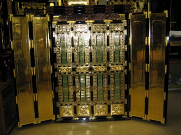

ATELIER PIANO
片桐仏壇店 アトリエピアノ
北前船が運んだ伝統の宗教工芸・小樽仏壇。
片桐仏壇店アトリエピアノは宗教工芸を軸に、北海道の風土に根ざした表現を追求します。
自社工場で製作したお仏壇は、国内外の寺院へお納めしております。
また伝統の工芸技術や文化をつたえるため、体験工房などを開催しております。
宗教空間への感性と北海道の風土をいかしてのガーデンデザインもおこなっております。
店舗のごあんない
体験工房
ガーデンデザイン
音楽と文化
リンク
